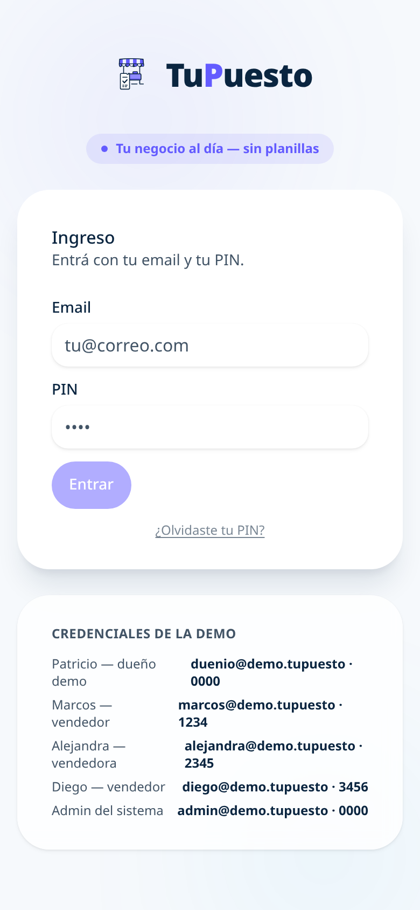
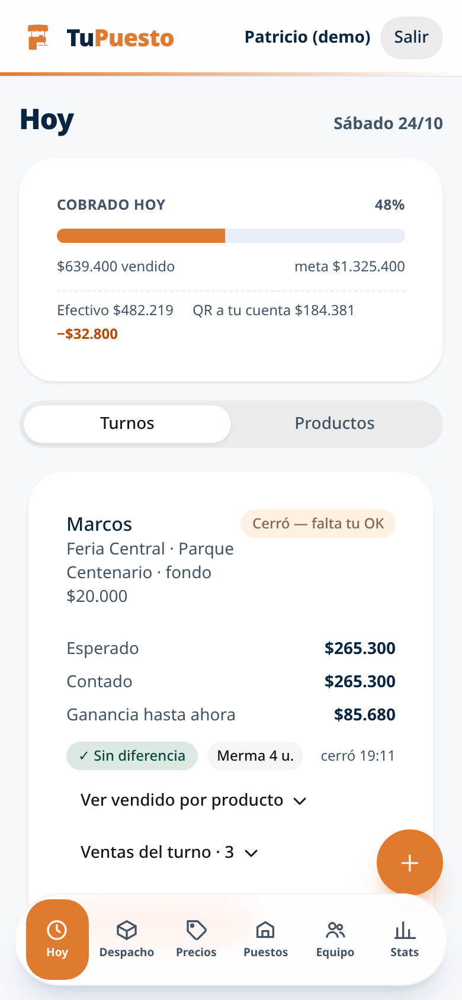
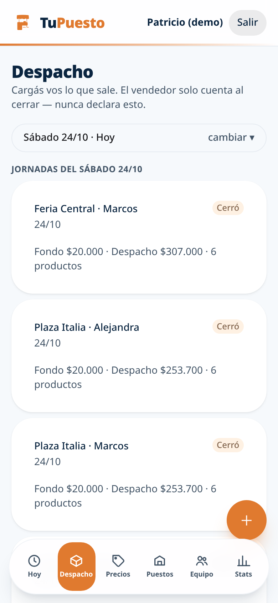
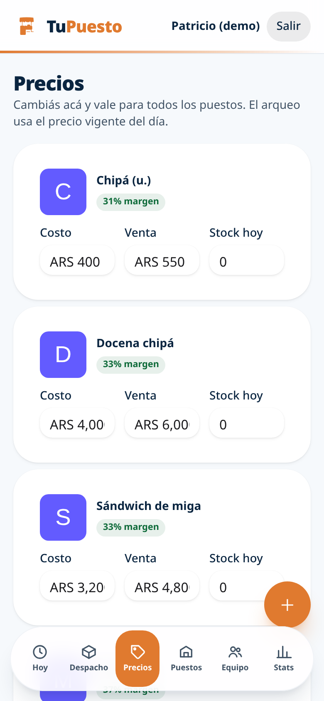
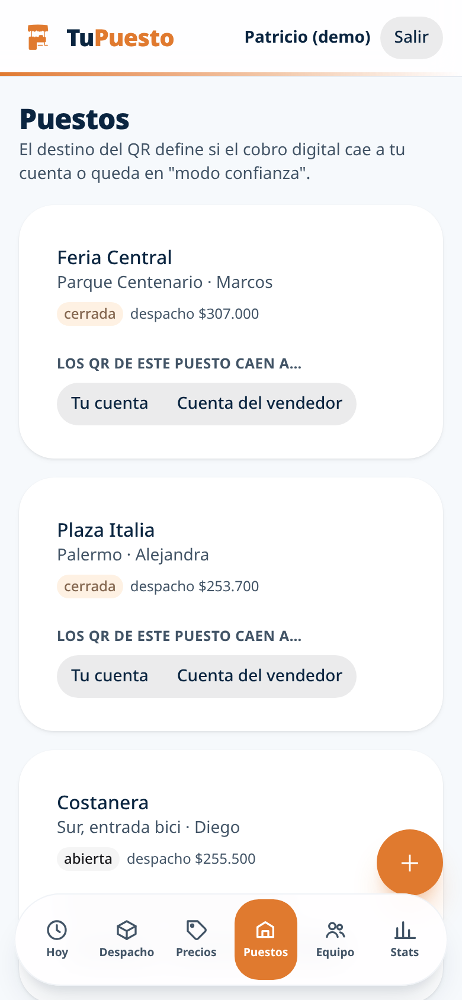
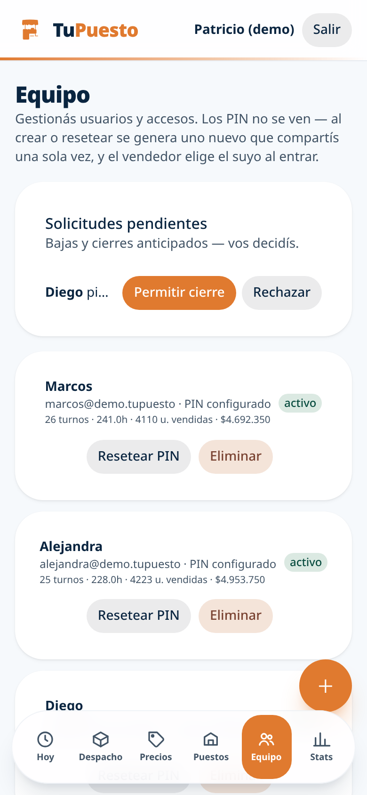
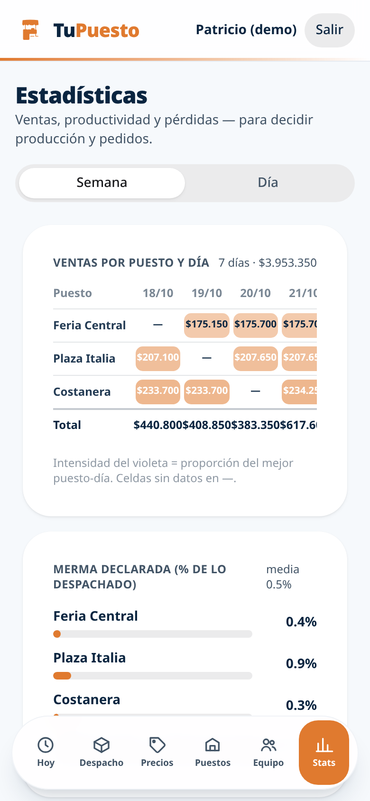
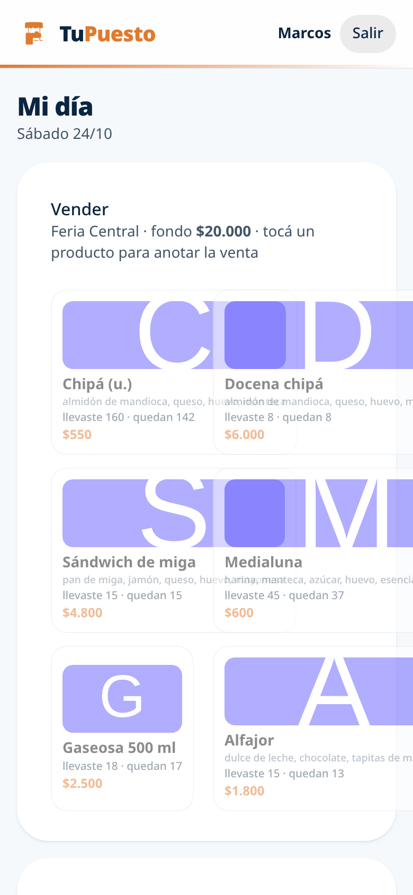

Manual de Usuario — TuPuesto
Control de venta ambulante: turnos, caja, despachos y rendición de vendedores
Versión: demo · App: tupuesto.vercel.app/app · Público: dueños y vendedores
¿Qué es TuPuesto? Una app para dueños de micro-pymes de venta ambulante con más de un puesto. El dueño despacha productos y plata de fondo a cada puesto; el vendedor vende y al final del turno rinde la caja. El sistema compara lo esperado vs lo contado y marca faltantes, sobrantes y mermas.
1. Ingreso al sistema
Todos los usuarios —dueños, vendedores y el administrador— entran por el mismo formulario con su email + PIN de 4 dígitos. El sistema detecta el rol automáticamente y muestra la vista correspondiente.

Pantalla de ingreso — email + PIN. El color del tema depende del rubro del dueño.
- ¿Olvidaste tu PIN? → llega un código de 6 dígitos al correo, lo ingresás y elegís PIN nuevo.
- Primer ingreso (vendedor nuevo): el sistema te pide elegir tu propio PIN.
- Tema de color: la app cambia de color según el rubro del negocio (naranja comida, rosa postres, violeta ropa, cyan mercadería, ámbar juguetes). El vendedor ve el color de su dueño.
| Rol | Demo | PIN |
|---|
| Dueño | duenio@demo.tupuesto | 0000 |
| Vendedor | marcos@demo.tupuesto | 1234 |
| Vendedor | alejandra@demo.tupuesto | 2345 |
| Vendedor | diego@demo.tupuesto | 3456 |
| Admin | admin@demo.tupuesto | 0000 |
2. Vista del dueño — barra inferior
El dueño navega por 6 secciones desde la barra flotante: Hoy · Despacho · Precios · Puestos · Equipo · Stats.
2.1 Hoy — turnos y rendición

Hoy: estado de cada turno, caja esperada vs contada.
- Cada card es un turno (vendedor + puesto + fondo de caja).
- Estados: Vendiendo (turno abierto) → Cerró — falta tu OK (el vendedor rindió) → confirmado con el botón de OK.
- Diferencias: al cerrar se muestra Esperado vs Contado y el chip verde "Sin diferencia" o rojo "Faltan $X" / naranja "Sobran $X".
- Solicitud de cierre anticipado: si el vendedor pide terminar antes, aparece una banda dentro del turno con el motivo y botones Aprobar / Rechazar. Aprobar marca el turno como cerrado.
- Turnos libres: sección inferior — turnos sin vendedor que podés tomar o reasignar.
2.2 Despacho — cargar mercadería al turno

Despacho: productos + cantidades que salen hacia el puesto.
- Elegís fecha y puesto, luego productos con cantidad → se crea el despacho del turno.
- Restricción clave: solo aparecen productos activos con stock del día > 0. El stock se carga en Precios. La cantidad se topea al stock restante (stock del día − lo ya despachado hoy en otros turnos).
- Comprobante: al confirmar se muestra el resumen del despacho (productos, unidades, fondo).
- Desde acá también se crean turnos sin despachar (solo puesto + fondo).
2.3 Precios — catálogo y stock

Precios: catálogo con costo, venta, margen y stock del día.
- Cada producto: foto/ilustración (si no hay foto, ícono según el nombre), costo, venta, margen % y Stock hoy.
- Stock hoy = unidades disponibles para despachar hoy. Cargalo acá antes de armar turnos.
- Switch: activa/inactiva el producto — inactivo no se puede despachar ni vender.
- + (abajo a la derecha): producto nuevo con foto, precios e ingredientes.
- Los cambios de precio valen al instante; el arqueo usa el precio vigente del día.
2.4 Puestos — puntos de venta

Puestos: cada punto físico de venta con su ubicación.
- ABM de los puntos de venta (ferias, plazas, esquinas): nombre + ubicación.
- Un puesto puede tener un solo turno abierto por día.
- QR por puesto: identifica cada punto — el vendedor lo usa para entrar a su turno.
2.5 Equipo — vendedores y solicitudes

Equipo: vendedores de tu negocio, altas, solicitudes y eliminados.
- Alta de vendedores: nombre + email → llega el PIN por correo (marca TuPuesto, color de tu rubro).
- Solicitudes pendientes: arriba del listado — cierres anticipados o pedidos de baja. Aceptar/Rechazar.
- Eliminar vendedor: pasa a la sección "Eliminados" (no borra historial) — se puede restaurar.
2.6 Stats — estadísticas del negocio

Stats: ventas por puesto/día, métodos de pago, productos y vendedores.
- Heatmap: ventas por puesto × día (más intenso = más vendido).
- Rankings: por puesto, por vendedor y por producto.
- Métodos de pago: barra efectivo vs QR vs otros.
- Todos los gráficos usan el color del tema del negocio.
3. Vista del vendedor — Mi día

Mi día: tomar turno, vender y cerrar con conteo físico.
3.1 Tomar el turno
- Al entrar, el vendedor ve los turnos libres de su dueño → toma el suyo e ingresa el fondo de caja (plata inicial para dar cambio).
- El turno pasa a estado Vendiendo en la app del dueño.
3.2 Vender
- Grid de productos (solo lo despachado con stock) → tocás el producto, elegís cantidad y método de pago (efectivo/QR/otro).
- La boleta flotante suma las ventas del turno; el stock visible baja en tiempo real.
3.3 Cerrar el turno
- Cierre: el vendedor hace el conteo físico — plata en caja + unidades sobrantes por producto + descartes/mermas.
- El sistema calcula lo esperado y el dueño ve la diferencia en Hoy.
- Cierre anticipado: si necesita terminar antes de hora, el botón "Terminar antes" envía una solicitud al dueño — el turno solo se cierra si el dueño aprueba.
4. Funcionamiento técnico
- Sincronización: la app funciona offline (IndexedDB/Dexie) y sincroniza a Neon Postgres cada 30s + en cada escritura. El dueño ve los datos del vendedor en vivo.
- Multi-tenant: cada dueño ve solo sus productos, puestos, vendedores, turnos y stats — las cuentas están aisladas.
- Emails: altas de usuario y reset de PIN llegan por correo con el diseño del rubro.
- Admin (interno): gestión de todas las cuentas, flujo de dinero y puntajes de desempeño — solo acceso del administrador del sistema.
Buenas prácticas: cargá el stock del día en Precios antes de abrir turnos · el vendedor debe hacer el conteo físico al cierre (sin excusas) · revisá las diferencias en Hoy a diario · el QR de cada puesto impreso facilita el arranque del vendedor.
TuPuesto — manual de usuario · generado con capturas reales de la app